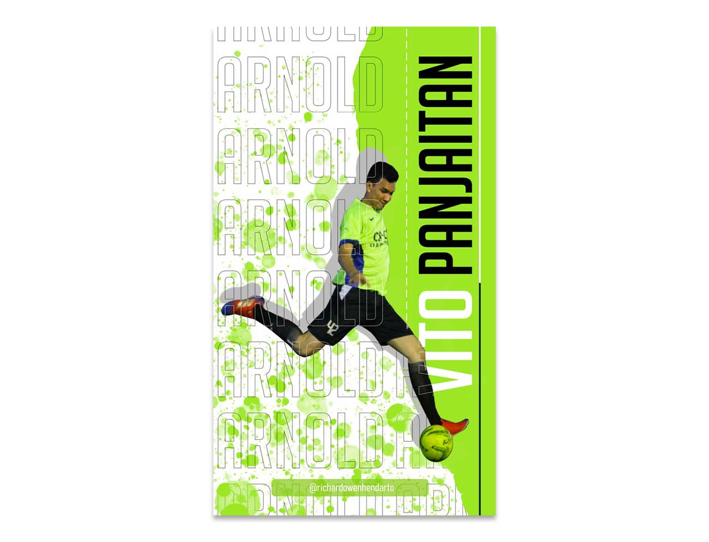
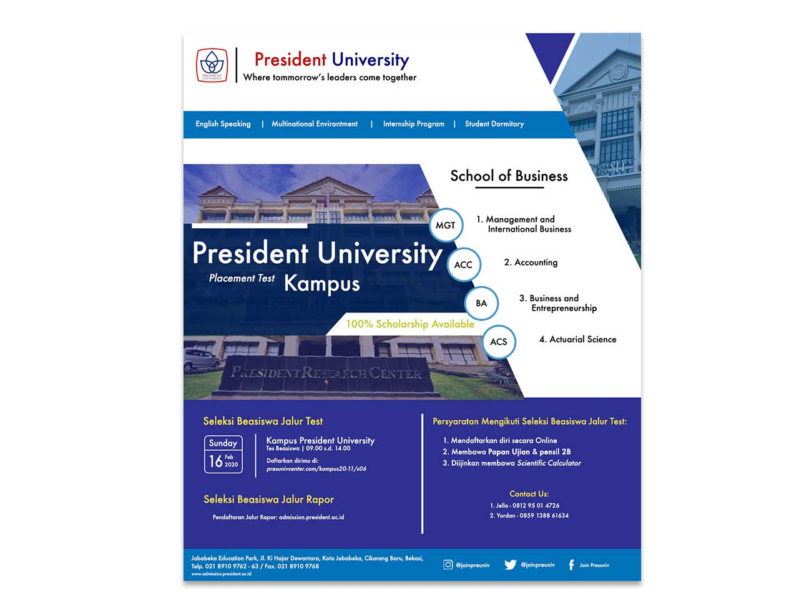
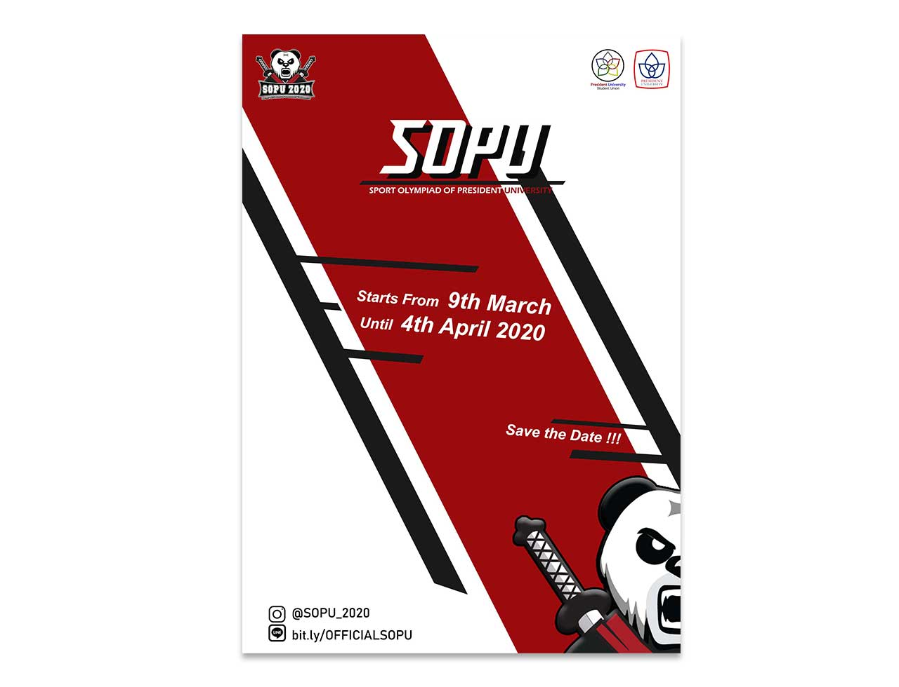
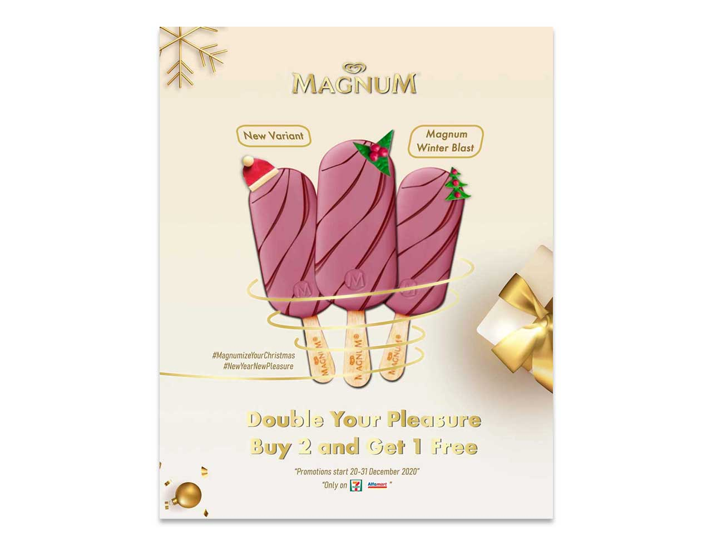
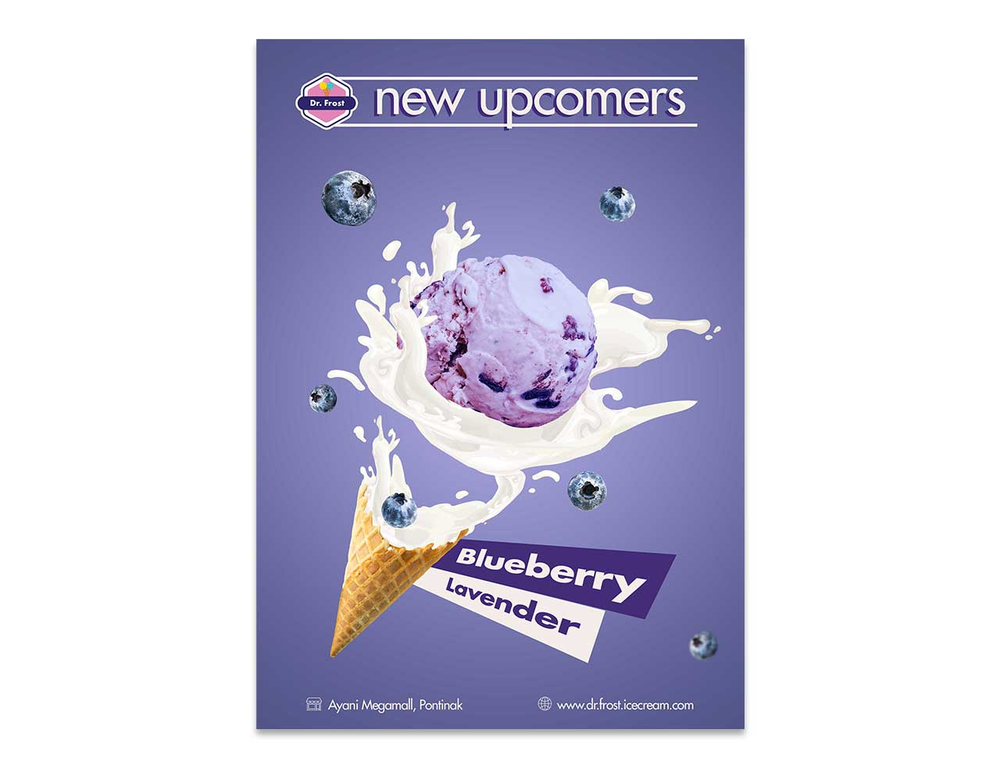
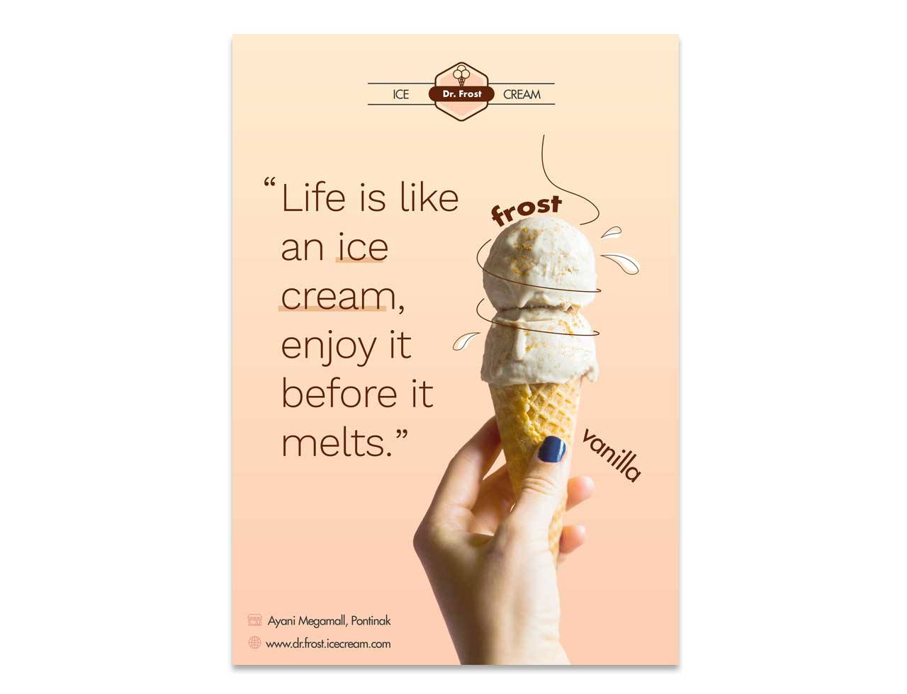

Graphic design / Posters
Poster Design
A collection of sports, university, event, and ice-cream poster designs.
Selected Visuals






Graphic design / Posters
A collection of sports, university, event, and ice-cream poster designs.





